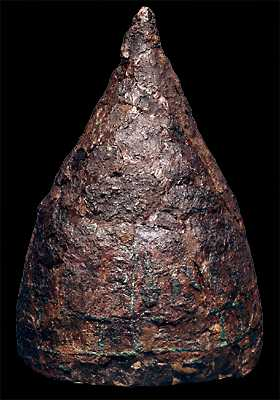

The Challenge -
Iron helmet

This iron helmet was found at the Assyrian capital city of Nimrud. It dates to around 800 B.C. Assyrian soldiers are shown wearing helmets like this on reliefs. After 1000 B.C. iron became important for making weapons as it is stronger than copper and bronze.
To learn more about warfare visit the Warfare Challenge.
|
|